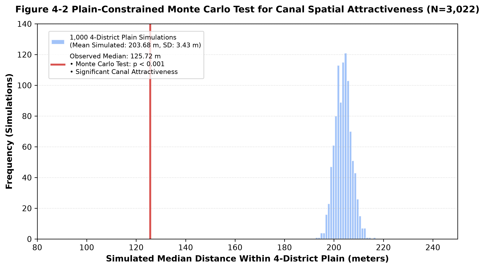

第四章 實證分析與討論#
「極端暴雨來襲時，積淹水以特殊的形式，重新喚醒了古水道被掩蓋的歷史邊界。」
4.1 距離衰減效應：越靠近古水道，淹水密度越高#
為了探討積淹水地點與古水道之間的空間距離關係，我們依據都市巷弄與建築街廓的空間尺度，將淹水點至最近古水道的幾何距離劃分為 5 個等級：
Class 1 (0–10公尺)：水道填平後直接對應的道路與第一排建築（直接受影響區）
Class 2 (10–30公尺)：穿過第一排建築後的第一層巷弄街廓
Class 3 (30–60公尺)：跨越巷弄的鄰近街廓
Class 4 (60–120公尺)：地勢開始轉折的外圍過渡區
Class 5 (>120公尺)：超出水圳微地形顯著影響的背景區域
表 4-1 古水道距離級距、點數占比與標準化空間密度表#
距離等級 (Class) |
距離範圍 (m) |
範圍寬度 (m) |
淹水點數 (筆) |
個別占比 (%) |
單位寬度密度 (點/m) |
|---|---|---|---|---|---|
Class 1 |
0 - 10 |
10 |
149 |
4.93% |
14.90 |
Class 2 |
10 - 30 |
20 |
263 |
8.70% |
13.15 |
Class 3 |
30 - 60 |
30 |
397 |
13.14% |
13.23 |
Class 4 |
60 - 120 |
60 |
650 |
21.51% |
10.83 |
Class 5 |
> 120 |
200* |
1,563 |
51.72% |
- |
總計 |
- |
- |
3,022 |
100.00% |
- |
*註：Class 5 的範圍寬度以 200 公尺作為預估基準，僅作背景點數統計，不納入距離遞減比較。
為什麼不能直接比點位數？「密度」的換算#
如果只看原始點數，Class 4（60–120m）有 650 筆點位，看起來比 Class 1（0–10m）的 149 筆還要多。但這其實不甚正確——因為 Class 4 的範圍寬度高達 60 公尺，是 Class 1（僅 10 公尺寬）的 6 倍大。直接拿點數相比，就像拿大國家的總人口與小城市相比一樣。
為了消除範圍面積不一的影響，我們計算出**「單位寬密度（總點數 / 範圍寬度）」**：
Class 1 (0–10m)：密度最高，達到 14.90 點/m
Class 2 (10–30m)：13.15 點/m
Class 3 (30–60m)：13.23 點/m
Class 4 (60–120m)：密度顯著下降至 10.83 點/m
 圖 4-1 古水道距離級距之淹水點個案占比與標準化空間密度 (Individual Percentage and Standardized Spatial Density, N=3,022)
圖 4-1 古水道距離級距之淹水點個案占比與標準化空間密度 (Individual Percentage and Standardized Spatial Density, N=3,022)
換算後的數據清楚顯示出**「距離越近、淹水密度越高」**的距離衰減效應（Distance Decay），證實離古水道越近的範圍內，淹水點分布更為緊密。雖然現代台北市把水圳蓋上水泥變成了道路住宅，但地表下長期被水流沖蝕形成的「微地形低窪溝谷」並沒有消失，默默引導著地表逕流。
4.2 空間顯著性檢定：平地限制性蒙地卡羅隨機抽樣#
為了證明「淹水點靠近古水道」非巧合，本研究採用平地限制性蒙地卡羅隨機抽樣 (Plain-Constrained Monte Carlo Simulation)。若抽樣範圍包含文山區南部山區或信義區東側山麓，會因山坡地不易積水且遠離平原古水道而大幅拉大距離。為了讓實驗保持真實，抽樣剔除了坡度 >30% 之山坡區域，僅於大安、松山、信義、文山四區之低窪平原區進行電腦隨機抽樣。
我們讓電腦在平原區內完全隨機撒落 3,022 個點，並重複執行 1,000 次，計算出在完全隨機狀況下離古水道的中位數距離（圖 4-2 的藍色分布）：
平原隨機期望中位數距離：約 203.68 公尺（標準差 \(SD = 3.43\) 公尺）
實測積淹水點中位數距離：僅有 125.72 公尺（圖 4-2 紅線）

圖 4-2 平地限制性蒙地卡羅隨機抽樣檢定 (Plain-Constrained Monte Carlo Test for Canal Spatial Attractiveness, N=3,022)實測距離顯著低於 1,000 次隨機抽樣之期望分布 (\(p < 0.001\))，證實即使控制了平原環境背景後，積淹水潛勢點依然高度緊貼古水道，應證古水路遺留之微地形確實發揮了顯著的空間吸引力。
4.3 水道周邊淹水占比與都市致災的多重交織#
古水道周邊 15m、30m 與 50m 的地理風險緩衝區涵蓋了 4.07%（123 筆） 的積淹水點，其餘背景區域則涵蓋了 95.93%（2,899 筆）。
 圖 4-3 風險緩衝區空間涵蓋率 (Spatial Coverage Ratio of Dissolve Risk Buffer, N=3,022)
圖 4-3 風險緩衝區空間涵蓋率 (Spatial Coverage Ratio of Dissolve Risk Buffer, N=3,022)
這組對比數據呈現了兩種截然不同卻互相豐富的地理視角：
微觀空間密度視角
從空間密度的角度來看，古水道風險緩衝區的土地面積加起來只是台北市總面積的極小部分，卻囊括了全區高達4.07%的積淹水點位。這意味著在古水道狹窄的影響半徑內，其淹水發生的相對密度是全市平均值的 4 倍以上。應證了歷史水文所遺留下來的微地形，至今依然發揮著不可忽視的效果，默默引導著雨水逕流的匯集。巨觀都市致災視角
然而，若將視角拉遠至全台北市的整體空間格局，僅有4.07%的積淹水點落在這條GIS 所劃定的特定水道邊界內，其餘高達95.93%的淹水點實則散布於更為寬廣的都市地區之中。這個對比提醒我們，都市淹水從來就不是一個能被歸因於單一變數的簡單現象。地表下的古水道微地形固然提供了一個物理上的集水槽，但現代都市的高密度不透水層鋪面、瞬間超越設計極限的極端短時強降雨、地下雨水管網宣洩不及的瓶頸，以及特定邊緣區域（如文山區山腳坡地）所承接的山坡地逕流，都在不同的時間與空間維度上交織運作，共同塑造出錯綜複雜的致災圖景。